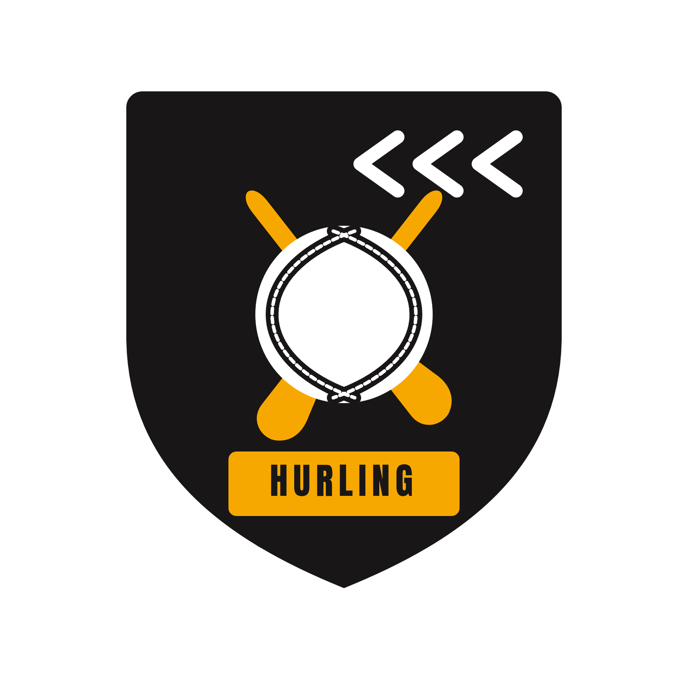

Last Chance Hurling
PLAYER GUIDE
Early Access · PC · Controller first
The game in one minute
Hurling: fifteen a side, a stick (the hurley) and a small ball (the sliotar). Win the ball, run with it balanced on the stick, and strike it between the posts.
Over the bar, between the posts
Under the bar, past the keeper
Built for a controller. Keyboard and mouse work too; the in-game Controls sheet shows your own bindings.
Controls
Pad buttons are Xbox names. Hold means keep it pressed while you act.
| Pad | Keyboard | With the ball | Without it | Under a dropping ball |
|---|---|---|---|---|
| Left stick | W A S D | Run | Run | Get under it |
| Right stick | Hold B or right mouse, aim with the mouse, release | Pull back, then flick: the strike | Bat it. The flick picks where the break goes | |
| X | Space or left mouse | Short strike (a point on Junior B and A) | Ground strike, or hook | Bat it |
| A | E | Pick up a loose ball, or block | Catch it | |
| B | F | Hand pass | Shoulder, side-on | Shoulder in |
| Y | Q | Switch to another man | ||
| RB | G | Solo: run with the ball on the stick | ||
| LB | Hold: brace | Hold: brace. It counts here | ||
| LT | Ctrl | Hold: short | ||
| RT | C | Hold: go for goal, low | ||
| Back | V | Camera: broadcast, close, high, TV | ||
| Right stick click + D-pad | T + D-pad | Coach a line: push up or drop, narrow or widen. Tap to cycle which line you are coaching | ||
| Start | Esc | Pause. At any dead ball, the tactics board | ||
How to score
Points come from the right stick. Face the posts, pull the stick back, hold it a beat, then flick it through toward the posts. The flick is your aim: straight at the posts is straight, off to a side drifts.
- Plant your feet. Let go of the left stick as you strike. Running, or a man on you, makes the strike wobble.
- Pick your range. From 20 to 45 m a clean strike carries over the bar. From further out it needs a pure one.
- Read the word. After every strike the game tells you how clean it was and why: off the sweet spot, on the run, a man on you. That word is your coaching.
- Goals. Inside 20 m, hold RT while you strike to keep it low and under the bar. The keeper reads a slow ball, so hit it.
- The short strike. X is a safe medium strike for moving the ball on. On the Junior B and Junior A grades it scores too; from Intermediate up only the right stick scores.
- Hand pass. B finds the best team-mate within 40 m: a hand pass inside 12 m, a short stick pass beyond that. If nobody is on, you keep the ball.
Winning the ball and defending
Most possession is won under a dropping ball or on the ground, not handed over. Get there early and choose.
- A dropping ball. Get under it with the left stick. A catches it, X bats it (flick the right stick to pick where the break goes), B shoulders the man beside you, hold LB to brace. A good catch is yours to run with; a bat sends it loose to where you flicked.
- A loose ball. A picks it up. Off the ground you may also strike it where it lies with X.
- Marking. Y switches you to the man nearest the play. Stay goal-side of your man. B is the shoulder, side-on; a shoulder from behind or front-on is a free against you.
- Stopping a strike. A blocks, X hooks the hurley as he swings. Both need you close and timed to his swing, not to the ball.
- The keeper. You do not control him. He reads the ball and narrows the angle. The puck-out is yours to aim and strike.
Timing beats pressing early. The contest is decided on when you commit, so wait for the ball rather than the man.
Match day, half time and options
A full match starts with the walk-out and the anthem, helmets off. Press the prompted button to skip it. The referee throws in, umpires flag every score, and the commentary and crowd follow the play.
- Half time. The board shows both teams' shots. From it you can change your shape and your puck-out plan before the second half.
- Difficulty. Easy and Normal give your striking some help. Measured gives none: what you swing is what you get. In Career the grade of your club (Junior B up to Senior) sets how good the opposition is and whether X scores.
- Camera. Back cycles broadcast, close, high and TV. In the pause menu, "camera switches sides at half-time" is off by default, so the teams change ends as they do in a real match. Turn it on if you prefer to always attack the same way.
- Coaching in play. Hold the right stick click (T on a keyboard) and use the D-pad to push a line up or drop it, narrow or widen it. Tap to cycle which line you are coaching.
- Pause. Start opens the pause menu and, at any dead ball, the tactics board.
Early Access
Last Chance Hurling is in Early Access. In it today: full 15-a-side and 7-a-side hurling against the AI, strikes from the hand and off the ground, hooks, blocks and shoulders, puck-outs you shape, sideline cuts and frees you aim, penalties, keepers who read the ball, match day with the walk-out and anthem, a club career, competitions and practice drills.
Still being worked on: animation polish, the camera on long balls, the AI's attacking play against a human, and deeper competitions.
If something looks wrong, tell us what you were doing and what you expected at hello@lcmgproductions.com. The match log in your Godot user folder helps us find it. Updates and known issues land first on the Steam page.